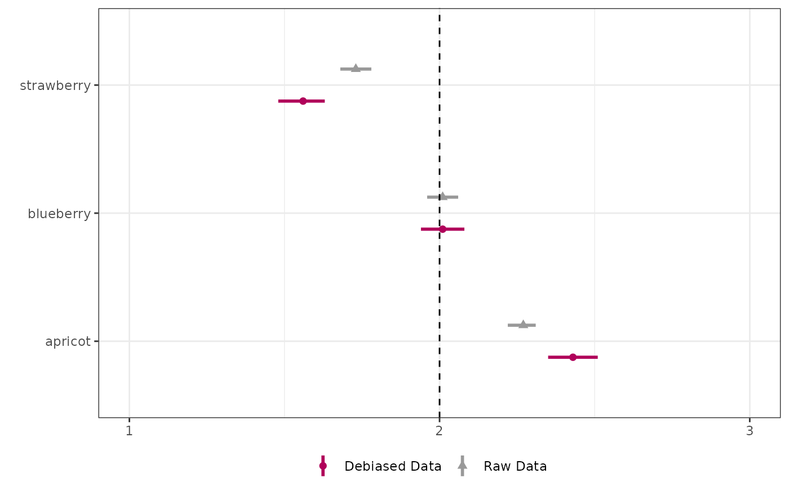
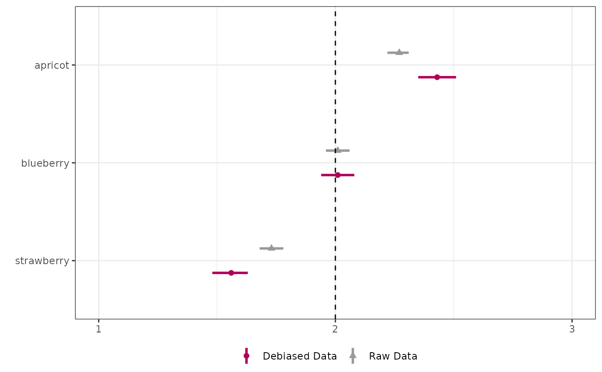
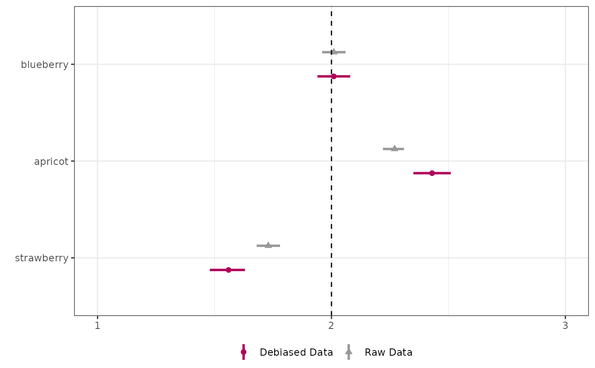

Visualize Average Rankings
Usage
viz_avg_rank(
data,
order = "est",
J = NULL,
compare = TRUE,
varname_type = "imp",
color_list = c("#b0015a", "#999999"),
label_pad_width = 2,
imp_pad_width = 15,
geom_point_size = 2
)Arguments
- data
The input data frame with ranking data to calculate average ranks from.
- order
How to order the items displayed in the visualization. If "est", the items will be ordered by the estimated average rank, from highest to lowest (i.e., small number to large number). If "fixed", the items will be ordered as specified in the data frame (i.e., an ordered factor), and the padding argument will be ignored. If other non-NULL value than "est" or "fixed", the items will be ordered as specified in the "order." If other, such as NULL, the items will be ordered by alphabetical names. Defaults to "est".
- J
The number of items to compare. Defaults to NULL, which will assume that the data frame has two groups of items to compare (using both raw and debiased data), and will take half of the number of rows. If J is specified, the function will assume that the data frame has J items to compare.
- compare
A logical value indicating whether to compare the raw and debiased data. Defaults to TRUE. If FALSE, it is assumed that the data only contains either raw or debiased data.
- varname_type
The variable name that contains whether the row is debiased or raw data. Defaults to "imp". This is only relevant when compare is TRUE.
- color_list
A vector of colors to use in the visualization. Defaults to c("#b0015a", "#999999"). The first color is used for the debiased data, and the second color is used for the raw data.
- label_pad_width
The width of the padding for the labels. Defaults to 2.
- imp_pad_width
The width of the padding for the legend labels. Defaults to 15.
- geom_point_size
The size of the points in the visualization. Defaults to 2.
Examples
## Sample output using imprr function
avg_df <- data.frame(
name = c(
"strawberry", "strawberry", "blueberry", "blueberry",
"apricot", "apricot"
),
est = c(1.56, 1.73, 2.01, 2.01, 2.43, 2.27),
low = c(1.48, 1.68, 1.94, 1.96, 2.35, 2.22),
up = c(1.63, 1.78, 2.08, 2.06, 2.51, 2.31),
imp = c(
"debiased data", "raw data", "debiased data",
"raw data", "debiased data", "raw data"
)
)
viz_avg_rank(avg_df)

viz_avg_rank(avg_df, order = NULL)

viz_avg_rank(avg_df, order = c("blueberry", "apricot", "strawberry"))
